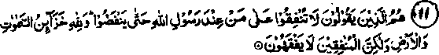

Chapter Two · Section (a): Ayaat on warning against miserliness and hoarding
3. ‘He will replace you with some other people’
9. Take heed, you are the people who are called to spend in the path of Allah, yet among you there are some who hoard. And as for him who hoards, he hoards only from his soul. And Allah is the Rich, and you are the poor. And if you turn away, He will exchange you for some other folk, and they will not be the likes of you. (Muhammad: 38)
Note: It is obvious that there is no personal interest of Allah Ta'ala in the Sadaqah that we give. All the virtues and benefits that He and His Rasul Sallallaho alaihe wasallam have, stated,to encourage us, are for our gain only. Many benefits of Sadaqaat, both from the religious and the wordly point of view, have been dealt with in Chapter one. When a Ruler,who is also the Creator add the Lord, requires someone to do something, without any personal interest, the total gain in this is that of the one who is being told and if he disregards that, to him must come maximum retribution.
One Hadith says that many people receive plenty of bounties from Allah Ta'ala, meant for benefitting other people. So long as they keep on giving to others,they retain them. If and when they go wrong, Allah Ta'ala deprives them of those bounties and grants them to others. These favours, which Allah Ta'ala grants are not confined to riches, but include honourable position, respectability and influence, all of which suffer the same fate. Certain Ahadith say that, when the above Ayat, saying, Tf you turn away from obedience of Allah Ta'ala, He will bring another people in your place’, was revealed, some Sahabah asked Rasulullah Sallallaho alaihe wasallam as to who will those people be,who will replace them in the event of their disobedience. Rasulullah Sallallaho alaihe wasallam put his hand on the shoulders of Salman Farsi Radhiallah anho and said, "He and his people". He then swore by Allah and said, “If Islam were placed on the distant stars, some people of Faris (Persia) would have attained to it". (The subject is contained in several Ahadith). It shows that Allah Ta'ala has blessed them with such keen zeal for Deen and knowledge that they would reach to the stars, if that could help them to attain it. Mishkat has quoted this narration from Tirmizi. In another narration Rasulullah Sallallaho alaihe wasallam has been quoted to have put greater trust in non-Arab people, (Ajami) from Persia and Turkistan, than in his own people, or that he trusted Ajamies, or some of them, more than some of the Arabs.
This is obviously because some people among the Ajam acquired such a distinction that they stood very high, except for the status of Sahabi. The virtues and distinctions of Salman Farsi Radhiallaho anho, to which he was indeed entitled, have been mentioned in Ahadith. He suffered great hardships for the true Deen, searching for it in country after country. He had a long life of 250 years according to authentic sources . (Some have put it at 350 years, and some have even exceeded that; so much so that they say that he lived in the time of Isaa Alaihissalam who lived 600 years before Rasulullah Sallallaho alaihe wasallam). Salman Radhiallaho anho came to know about the coming of Rasulullah Sallallaho alaihe wasallam from the old Scriptures and he left his home in search of him. He made enquiries from monks and religious scholars of that time, who gave him the good news that the time of the coming of Rasulullah Sallallaho alaihe wasallam was quite close and they explained to him various signs about his appearance. Salman Radhiallaho anho was one of the princes of Persia. He travelled far and vide from one country to another, looking for those signs? Someone arrested him and sold him as his slave. He was sold several times in that way, as he himself told people. It is narrated in Bukhari that more than ten masters bought and sold him. Finally a Jew from Madinah bought him at about the time when Rasulullah Sallallaho alaihe wasallam migrated to that city. He met Rasulullah Sallallaho alaihe wasallam and indentified him by the signs that he had heard about him. He was satisfied and became a Muslim. He got himself freed from the Jew's slavery by paying ransom-money.
Rasulullah Sallallaho alaihe wasallam has said that Allah Ta'ala loved four persons and Salman is one of them. (This does not mean that Allah Ta'ala loves no one else). Ali Radhiallaho anho has said that Allah Ta'ala gave seven elite to every Rasul Alaihissalam, meaning, a Jama‘at of great souls who looked after the spiritual and worldly affairs of the Rasul and were his helpers, Rasulullah Sallallaho alaihe wasallam said that he had been given fourteen such divines. When someone asked Ali Radhiallaho anho as to who they were, he replied, "My self, my two sons Hasan and Husain, Ja'far, Hamzah, Abu Bakr, Umar, Mus'ab bin Umair, Bilal, Salman, Amm-aar, Abdullah Ibne Mas'ood, Abu Zarr Ghifari and Miqdad Radhiallaho anhum". They had a special position among the Sahabah in various important religious matters.
It is mentioned in Bukhari that, when the Ayat of Surah Jum'ah meaning:
Along with others of them who have not yet joined them,
(Referring to the learned divines of the non-Arab regions with particular reference to the East) was revealed, the Sahabah asked Rasulullah Sallallaho alaihe wasallam as to who those people were. Rasulullah Sallallaho alaihe wasallam remained silent, but the Sahabah repeated their question three times. Rasulullah then put his hand on the shoulder of Salman Radhiallaho anho and said that if Deen were placed on stars high in the sky, some of his people would reach there to get it. Another Hadith says the same thing about the people of Faris (Persia). Allama Suyuti Rahmatullah alaihe, who is one of the confirmed leaders of the Shafi'ee creed, says that this Hadith fits appropriately as a prediction of the religious accomplishments of Imaam Abu Hanifah Rahmatullah alaihe.
10. Naught of disaster befalls on the earth or in yourselves but it is in a Book (Lohe Mahfooz) before We bring it into being ....... Lo! that is easy for Allah-That you grieve not for the sake of that which has escaped you, nor yet exult because of that which has been given to you. Allah loves not all prideful boasters, who hoard and who enjoin upon the people avarice; and whosoever turns away, still, Allah is the Absolute, the Owner of Praise. (al-Hadeed: 22-24)
Note: To grieve over a calamity is raiural, but grief must not stop one from participating in religious or worldly activities. To know that certain things are bound to take place, despite any effort to stop them, minimises the sorrow over the loss or damage, as against something which may happen all of a sudden. For that reason, the warning contained in the Ayaat refers to all events of life and death, happiness and sorrow or any type of calamity. Allah Ta'ala says that all these things have been preordained by Him, therefore it is no use taking pride over good happenings or grieving over any loss. The Ayat mentions two words (Mukhtaal and Fak-hoor), which together mean a prideful boaster. The pride is usualy over personal accomplishment and the boasting is on something that is received from outside, like rank or wealth. Qaza‘h Rahmatullah alaihe says that he saw Abdullah Ibne Umar Radhiallaho anho dressed in coarse clothes, so he took for him a suit made of a material from Khurasan and requested him to put it on for his pleasure. Abdullah Ibne Umar replied that he was afraid of suffering from pride and boastfulness ( ) if he wore those clothes!

11. They it is who say: Spend not on behalf of those (who dwell) with Rasulullah that they may disperse (and go away from youhwith Allah’s are the treasures of the heavens and the earth, but the hypocrites do not comprehend. (al-Munafiqoon: 7)
Note: Various Ahadith have coverd this subject: that Abdullah bin Ubayyi the leader of Hypocrites, and his progeny, told people not to give —ny aid to those who were close to Rasulullah Sallallaho alaihe wasallam so that they might become disheartened and desert him. Thereupon, the above Ayat was revealed. It is an absolute truth and a common experience that whenever an individual or some people, due to malice and bad intentions, stopped aid to sincere religious workers, Allah Ta‘ala by His Grace and Kindness opened a new avenue; so every one of us should have faith that Allah Ta'ala has the sole control over the provisions for human life and no other power however strong can interfere. On the other hand, all those who hinder or stop any help to religious requirements should be prepared to give an explanation for that to Allah Ta'ala on the Day of Judgement, when no false excuses will work,nor will a pleader be of any avail. Let it be known that evading help in such matters by concocted excuses will only result in one’s ruining one’s own fate in Akhirah; to obstruct religious requirements or to stop others from helping them, because of some personal hatred and for fulfilling wrong worldly-ends, will result in one’s own disaster rather than bring any harm to others.
Rasulullah Sallallaho alaihe wasallam has said that, when someone evades helping a Muslim brother at the time when he is being villified and dishonoured, Allah Ta'ala remains unconcerned about the evader when he himself is badly in need of help by anyone. (Mishkaat). The practice ofRasulullah Sallallaho alaihe wasallam in , any situation is a guideline for the Ummah. It is obligatory on every one of us to try to find out in everything the way he acted and we must, sincerely and to the best of our ability, follow him. He, as a rule, did not hesitate to help even his enemies. There are several examples of that in the books of Ahadith and history.
Abdullah bin Ubayyi, who was the leader of the hypocrites, did not miss any oportunity to cause injury and trouble to Rasulullah Sallallaho alaihe wasallam. It is said about him that, during the journey in which the above Ayat was revealed, he told his people (hypocrites) that they were a respectable class and that, after reaching Madinah, they would drive the despicable band out of the city (meaning the Muhajireen). In spite of this, when he fell ill a few days after his return from the journey, he told his son, who was a devout Muslim, to go to Rasulullah Sallallaho alaihe wasallam and request him to come to see him, hoping that Rasulullah would agree to the request of the son. The son went and made the request, to which Rasulullah Sallallaho alaihe wasallam readily agreed and accompanied the son to his home. When Abdullah saw Rasulullah he started crying. Rasulullah Sallallaho alaihe wasallam told him, "O enemy of Allah, are you afraid?" He said, "I have not called you to rebuke me, but I have called you to have mercy on me!”. At this, the eyes of Rasulullah Sallallaho alaihe wasallam were filled with tears and he asked him what he wanted. He said, "I am about to die,- when that happens,kindly be present when I am being washed after death, grant your own clothing for shrouding me, accompany my bier to the grave and kindly lead my funeral-prayers.1 Rasulullah Sallallaho alaihe wasallam agreed graciously to all his requests. Thereupon,the Ayat was revealed:- v
In this Ayat,Allah Ta'ala forbade Rasulullah Sallallaho alaihe wasallam to lead the funeral-prayers of the hypocrites. The nobility of Rasulullah is shown by the treatment given to his deadly enemies who were all the time bent upon villifying and defaming him.
Could we give that type of treatment to our enemies? Rasulullah Sallallaho alaihe wasallam was an embodiment of mercy for the entire mankind. On seeing the misery of his deadly foe, his eyes filled with tears and he fullfilled his wishes, which due to his lack of faith were of no use to him. For the future, Allah Ta'ala forbade Rasulullah to show such extreme kindness.